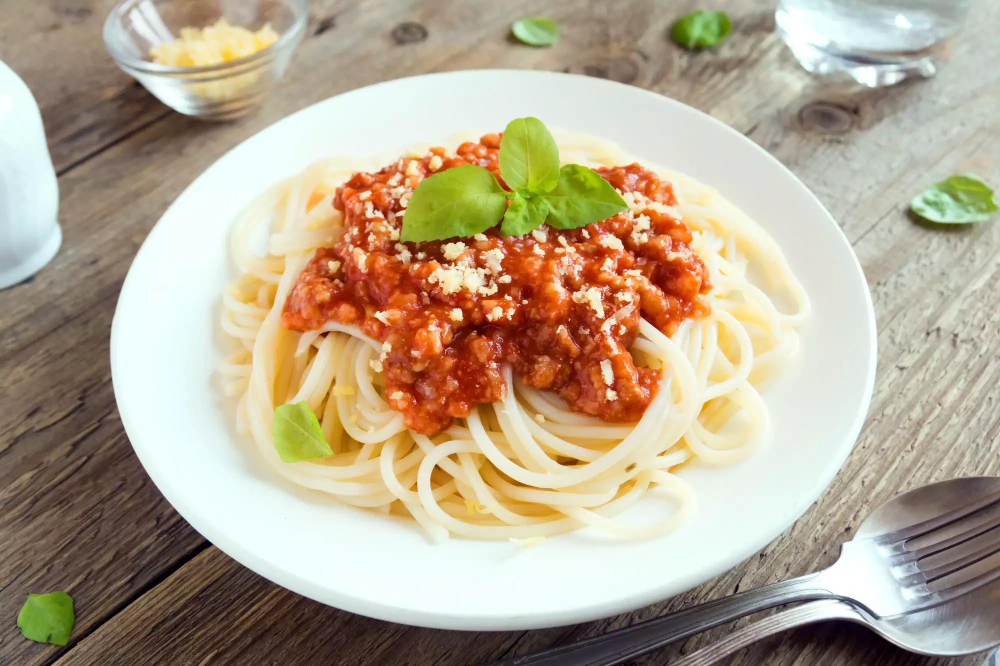

Pasta a la bolognesa

Descripción
Este trabajo de amor no es su salsa de carne roja tradicional.
La boloñesa es una deliciosa salsa de carne que se refina y se cuece a fuego lento
durante horas para resaltar los excelentes sabores de todos los ingredientes.
Combínalo con tagliatelle o con tu pasta favorita para crear una cremosidad
satinada a partir de los almidones de la pasta que hacen de esta una comida memorable.
Sirva con una hogaza de pan italiano crujiente.
Ingredientes
- 4 onzas de panceta tocino, finamente picado
- 3 zanahorias, finamente picadas
- 3 tallos de apio, finamente picados
- 2 cebollas, finamente picadas
- 3 cucharadas de aceite de oliva virgen extra
- 1 libra de carne molida de res magra al 85 %
- ½ taza de vino blanco seco
- 1 lata (28 onzas) de tomates enteros pelados San Marzano, escurridos
- ½ cucharadita de nuez moscada molida
- ½ cucharadita de sal
- ¼ de cucharadita de pimiento rojo molido
- 1 taza de caldo de res
- ¼ taza de crema espesa
- 1 caja (16 onzas) de pasta tagliatelle
- ¼ taza de queso parmesano rallado, o al gusto
Pasos a seguir
- Cocine la panceta en una sartén a fuego medio hasta que suelte la grasa y esté crujiente, de 7 a 8 minutos. Agregue las zanahorias, el apio y las cebollas y cocine hasta que las verduras se ablanden y las cebollas estén translúcidas, de 7 a 8 minutos. Dejar de lado.
- Caliente el aceite de oliva en una olla de 4 cuartos a fuego medio. Parta la carne molida de res y cerdo en trozos pequeños y agréguelos a la olla; cocine, revolviendo ligeramente, hasta que se dore, de 7 a 8 minutos.
- Revuelva la mezcla de panceta y vegetales en la carne molida. Agrega vino. Reduzca el fuego a medio-bajo y revuelva, rompiendo la carne hasta que esté finamente molida, el vino se haya evaporado y la olla esté casi seca, de 13 a 15 minutos. Agregue los tomates, la nuez moscada, la sal y el pimiento rojo. Usa el dorso de una cuchara para romper los tomates y continúa rompiendo la mezcla de carne en trozos muy pequeños, aproximadamente 5 minutos.
- Vierta el caldo de res y la crema espesa en la olla y reduzca el fuego al nivel más bajo. Dejar cocer a fuego lento, parcialmente tapado, revolviendo ocasionalmente, durante al menos 2 horas.
- Mientras tanto, llene una olla grande con agua ligeramente salada y deje hervir. Cocine los tagliatelle a ebullición hasta que estén tiernos pero firmes al morder, aproximadamente 8 minutos. Reserve 1 taza de agua de la pasta y escúrrala bien.
- Agregue la pasta a la salsa boloñesa y mezcle bien, agregando un poco de agua de pasta reservada si es necesario para desarrollar una capa satinada. Cubra con queso parmesano rallado.